library(tidyverse)
library(ggplot2)
library(googlesheets4)
library(lubridate)
library(stringr)
library(scales)
library(dplyr)
knitr::opts_chunk$set(echo = TRUE, warning=FALSE, message=FALSE)FinalProject
final project
FinalProjectDRAFT1
Reading In the Data
gs4_deauth()
#creating a vector of new column names
mass_names<- c("incident_id", "incident_date", "state", "city_or_county", "address", "number_killed", "number_injured", "delete")
#creating a function to read in the data sets with new column names, skip the first row, and remove the "operation" column which contains links to news articles in original data source, and creating a "Year" column for ease of analysis
read_shootings<-function(sheet_name){read_sheet("https://docs.google.com/spreadsheets/d/1rCnIYPQSkcZDCulp5KXAxmZUBad4QtrERi4_7tUMXqs/edit?usp=sharing",
sheet=sheet_name,
col_names=mass_names,
skip=1) %>%
mutate("YearSheet"=sheet_name) %>%
mutate(Year=recode(YearSheet, "MassShootings2014"="2014", "MassShootings2015"="2015", "MassShootings2016"="2016", "MassShootings2017"="2017", "MassShootings2018"="2018", "MassShootings2019"="2019", "MassShootings2020"="2020", "MassShootings2021"="2021", "MassShootings2022"="2022")) %>%
select(-delete, -YearSheet)
}
#using purrr/map_dfr to join data sheets for 2014 through 2021, applying the function read_shootings for consistent formatting
mass_shootings_all <- map_dfr(
sheet_names("https://docs.google.com/spreadsheets/d/1rCnIYPQSkcZDCulp5KXAxmZUBad4QtrERi4_7tUMXqs/edit?usp=sharing")[1:9],
read_shootings)#converting incident_date from "POSIXct" to "date" format
mass_shootings_all# A tibble: 3,835 × 8
incident_id incident_date state city_…¹ address numbe…² numbe…³ Year
<dbl> <dttm> <chr> <chr> <chr> <dbl> <dbl> <chr>
1 271363 2014-12-29 00:00:00 Louisi… New Or… Poydra… 0 4 2014
2 269679 2014-12-27 00:00:00 Califo… Los An… 8800 b… 1 3 2014
3 270036 2014-12-27 00:00:00 Califo… Sacram… 4000 b… 0 4 2014
4 269167 2014-12-26 00:00:00 Illino… East S… 2500 b… 1 3 2014
5 268598 2014-12-24 00:00:00 Missou… Saint … 18th a… 1 3 2014
6 267792 2014-12-23 00:00:00 Kentuc… Winche… 260 Ox… 1 3 2014
7 268282 2014-12-22 00:00:00 Michig… Detroit Charle… 1 3 2014
8 282186 2014-12-22 00:00:00 New Yo… Webster 191 La… 4 2 2014
9 267721 2014-12-22 00:00:00 Illino… Chicago 5700 b… 0 5 2014
10 266570 2014-12-21 00:00:00 Florida Saraso… 4034 N… 2 2 2014
# … with 3,825 more rows, and abbreviated variable names ¹city_or_county,
# ²number_killed, ³number_injured
# ℹ Use `print(n = ...)` to see more rowsmass_shootings_all$incident_date<-as.Date(mass_shootings_all$incident_date)
#creating a month column and converting to factors
mass_shootings_all<-mass_shootings_all%>%
mutate(month=as.factor(month(incident_date))) %>%
mutate(month=recode(month, `1`="Jan", `2`="Feb", `3`="Mar", `4`="Apr", `5`="May", `6`="Jun", `7`="Jul", `8`="Aug", `9`="Sept", `10`="Oct", `11`="Nov", `12`="Dec"))
#sanity check
mass_shootings_all# A tibble: 3,835 × 9
incident_id incident_date state city_…¹ address numbe…² numbe…³ Year month
<dbl> <date> <chr> <chr> <chr> <dbl> <dbl> <chr> <fct>
1 271363 2014-12-29 Louisi… New Or… Poydra… 0 4 2014 Dec
2 269679 2014-12-27 Califo… Los An… 8800 b… 1 3 2014 Dec
3 270036 2014-12-27 Califo… Sacram… 4000 b… 0 4 2014 Dec
4 269167 2014-12-26 Illino… East S… 2500 b… 1 3 2014 Dec
5 268598 2014-12-24 Missou… Saint … 18th a… 1 3 2014 Dec
6 267792 2014-12-23 Kentuc… Winche… 260 Ox… 1 3 2014 Dec
7 268282 2014-12-22 Michig… Detroit Charle… 1 3 2014 Dec
8 282186 2014-12-22 New Yo… Webster 191 La… 4 2 2014 Dec
9 267721 2014-12-22 Illino… Chicago 5700 b… 0 5 2014 Dec
10 266570 2014-12-21 Florida Saraso… 4034 N… 2 2 2014 Dec
# … with 3,825 more rows, and abbreviated variable names ¹city_or_county,
# ²number_killed, ³number_injured
# ℹ Use `print(n = ...)` to see more rowsThe number of rows in the df is equal to the sum of the rows from the original google sheets data (-9 for column names in google sheets)
#Can now use "year" column to easily analyze data by year
filter(mass_shootings_all, Year=="2014")# A tibble: 272 × 9
incident_id incident_date state city_…¹ address numbe…² numbe…³ Year month
<dbl> <date> <chr> <chr> <chr> <dbl> <dbl> <chr> <fct>
1 271363 2014-12-29 Louisi… New Or… Poydra… 0 4 2014 Dec
2 269679 2014-12-27 Califo… Los An… 8800 b… 1 3 2014 Dec
3 270036 2014-12-27 Califo… Sacram… 4000 b… 0 4 2014 Dec
4 269167 2014-12-26 Illino… East S… 2500 b… 1 3 2014 Dec
5 268598 2014-12-24 Missou… Saint … 18th a… 1 3 2014 Dec
6 267792 2014-12-23 Kentuc… Winche… 260 Ox… 1 3 2014 Dec
7 268282 2014-12-22 Michig… Detroit Charle… 1 3 2014 Dec
8 282186 2014-12-22 New Yo… Webster 191 La… 4 2 2014 Dec
9 267721 2014-12-22 Illino… Chicago 5700 b… 0 5 2014 Dec
10 266570 2014-12-21 Florida Saraso… 4034 N… 2 2 2014 Dec
# … with 262 more rows, and abbreviated variable names ¹city_or_county,
# ²number_killed, ³number_injured
# ℹ Use `print(n = ...)` to see more rows#creating plot of shootings/year
ggplot(mass_shootings_all, aes(Year))+
geom_bar(stat="Count")+
labs(title="Mass Shootings 2014-2022*", caption="*2022 data goes up to August 27, 2022")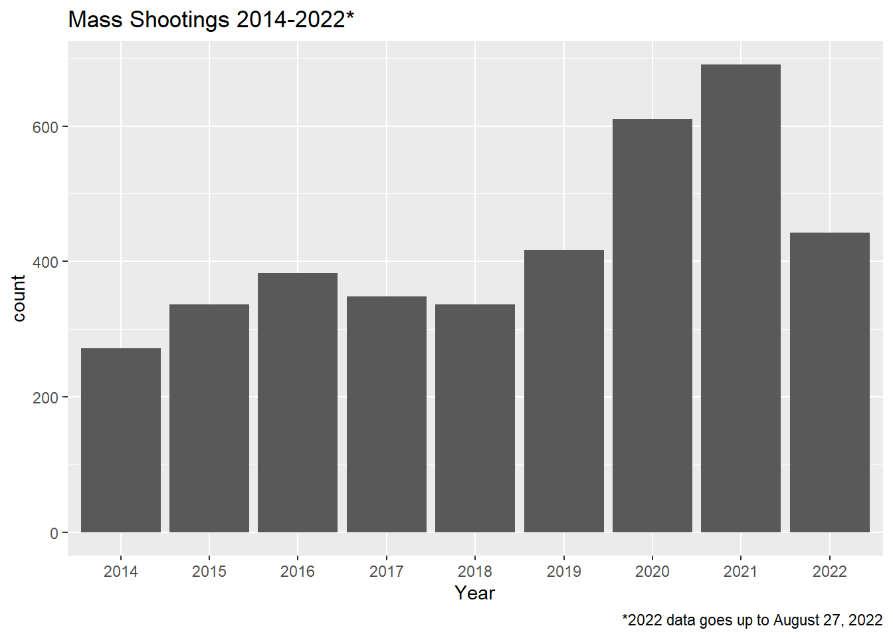
#creating plot by month
ggplot(mass_shootings_all, aes(x=month))+
geom_point(stat="count")+geom_line(stat="count", group=1)+
labs(title="Mass Shootings 2014-2022 By Month")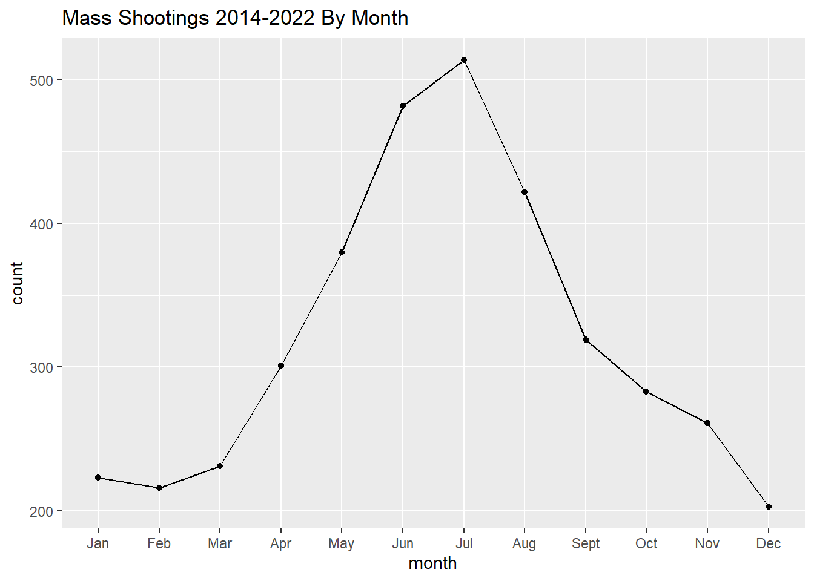
#creating line plot by year and month
ggplot(mass_shootings_all, aes(x=month, group=Year, color=Year))+
geom_line(stat="count")+
geom_point(stat="count")+
labs(title="Mass Shootings by Month 2014-2022*", caption="*2022 data is only up until August 27, 2022")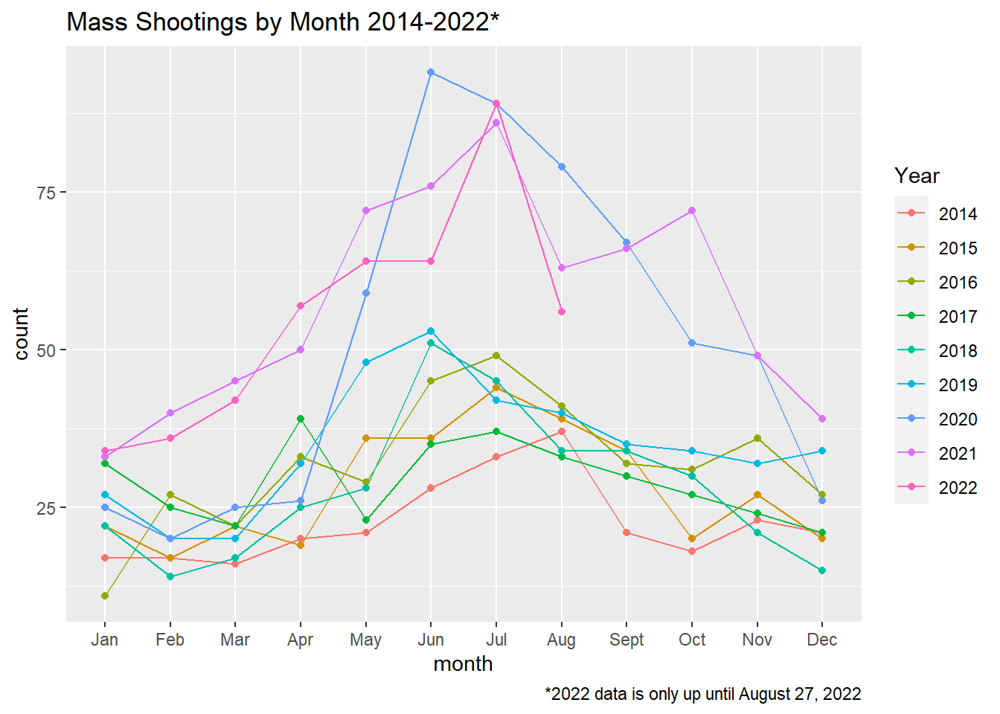
Graph appears to jump to new heights/monthly max in May 2020. The two lines that generally trend above it are 2021 and 2022.
In addition to mass shootings increasing over time, it appears that shootings could be correlated with temperature/season given the data set when filtered by month is highest in summer months an lowest in winter months.
I am curious if a less seasonally varying state would have the same distribution. Below I create the same plot for FL and MA
#Distribution of shootings by month in FL
filter(mass_shootings_all, state=="Florida") %>%
ggplot(aes(month))+geom_point(stat="Count")+geom_line(stat="count", group=1) +labs(title="Mass Shootings 2014-2022 By Month in Florida")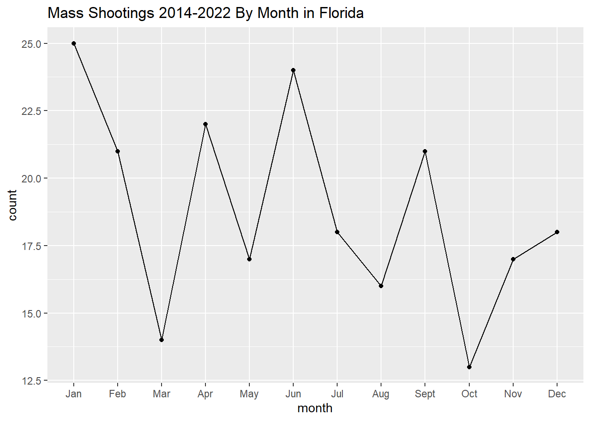
#Distribution of shootings by month in mA
filter(mass_shootings_all, state=="Massachusetts") %>%
ggplot(aes(month))+geom_point(stat="Count")+geom_line(stat="count", group=1)+labs(title="Mass Shootings 2014-2022 By Month in Massachusetts")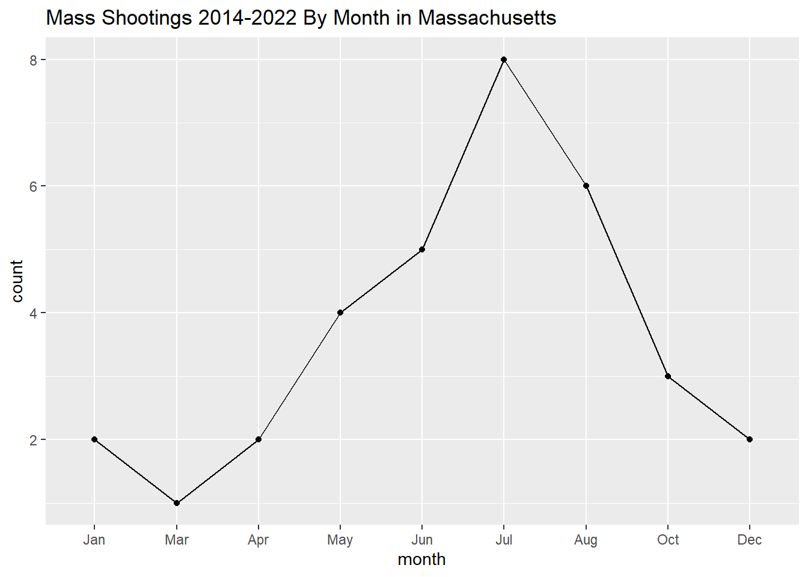
#Mass has some months where count=0, which is omitted from the histogram when filtering out mass. Below I created a table and then created a bar graph from this to preserve the months where count=0
mass_shootings_all_mass<-filter(mass_shootings_all, state=="Massachusetts") %>%
group_by(month, .drop=FALSE) %>%
summarise(Count = n())
mass_shootings_all_mass# A tibble: 12 × 2
month Count
<fct> <int>
1 Jan 2
2 Feb 0
3 Mar 1
4 Apr 2
5 May 4
6 Jun 5
7 Jul 8
8 Aug 6
9 Sept 0
10 Oct 3
11 Nov 0
12 Dec 2ggplot(mass_shootings_all_mass, aes(x=month, y=Count))+geom_point(stat="identity")+geom_line(stat="identity", group=1)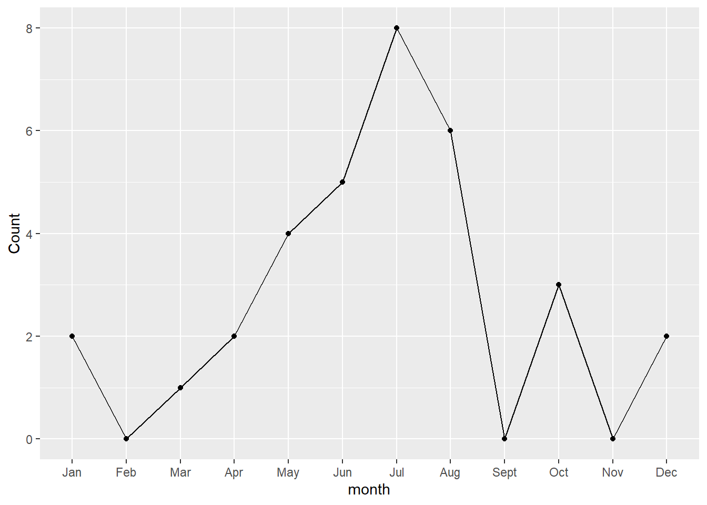
#creating month distribution by state. This table DOES preserve the months where the count=0, I think histogram makes more sense here?
ggplot(mass_shootings_all, aes(month))+geom_histogram(stat="count")+ facet_wrap(~state, scales = "free_y")+theme(strip.text = element_text(size=6))+labs(title="Mass Shootings 2014-2022 by Month Across U.S. States")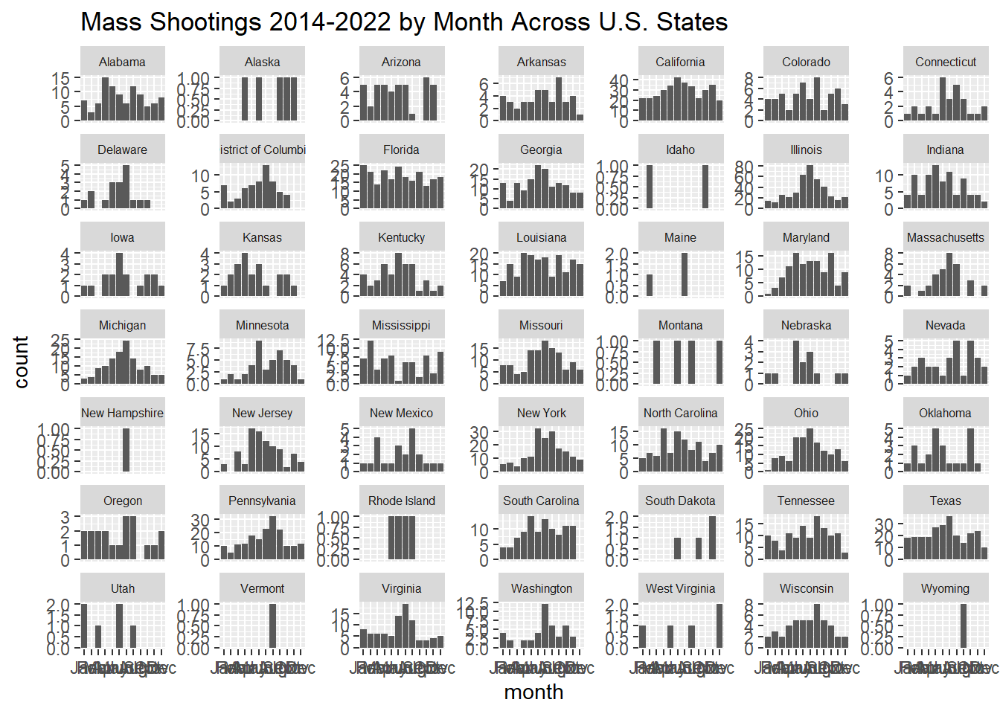
#creating month distribution by state. This table DOES NOT preserve the months where the count=0 but easier to visualize patterns than with histogram
ggplot(mass_shootings_all, aes(month))+geom_line(stat="count", group=1)+ facet_wrap(~state, scales = "free_y")+theme(strip.text = element_text(size=6))+labs(title="Mass Shootings 2014-2022 by Month Across U.S. States")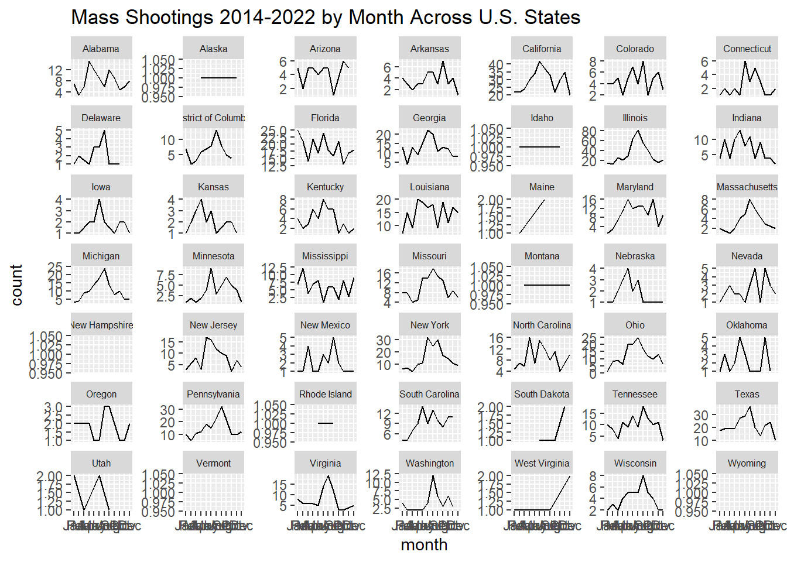
Going forward, I think I will try to create these plots for different states to see if this trend holds true across different states. I am also curious if i can find a dataset with typical temp ranges/state and seeing if there is correlation between temp variation and mass shootings.Am also curious to figure out what kind of distribution best describes the graph with all states.
Whats going on??? rant: There are a number of confounding factors that could explain the apparent correlation with season/temp- people more/less likely to leave the house based on weather, more public gatherings during seasons with higher temps… also wondering if covid affects this. I could create the same graph by state and year (but there probaly isnt enough events to see a correlation, but maybe for a state with a high population?) And wondering if the average number killed also increases with higher temperatures as there may be more opportunities/gatherings of people
Below, looking into how many people on average are shot during incidents
#Looking at distinct values for number killed
distinct(mass_shootings_all, number_killed) %>%
arrange(number_killed)# A tibble: 20 × 1
number_killed
<dbl>
1 0
2 1
3 2
4 3
5 4
6 5
7 6
8 7
9 8
10 9
11 10
12 11
13 13
14 16
15 17
16 22
17 23
18 27
19 50
20 59#Looking at distinct values for number injured
distinct(mass_shootings_all, number_injured) %>%
arrange(number_injured)# A tibble: 28 × 1
number_injured
<dbl>
1 0
2 1
3 2
4 3
5 4
6 5
7 6
8 7
9 8
10 9
# … with 18 more rows
# ℹ Use `print(n = ...)` to see more rows#creating a new column/variable to measure severity based on above variables, number shot= number killed+number injured
mass_shootings_all<-mass_shootings_all %>%
mutate(number_shot= number_injured+number_killed)
#Looking at distinct values for new variable
distinct(mass_shootings_all, number_shot) %>%
arrange(number_shot)# A tibble: 31 × 1
number_shot
<dbl>
1 4
2 5
3 6
4 7
5 8
6 9
7 10
8 11
9 12
10 13
# … with 21 more rows
# ℹ Use `print(n = ...)` to see more rows#Graphing distribution of number shot (killed or injured) in mass shootings
#filtering out where number shot>30
mass_shootings_all %>%
filter(number_shot<30) %>%
ggplot(aes(number_shot))+geom_histogram(binwidth = 1)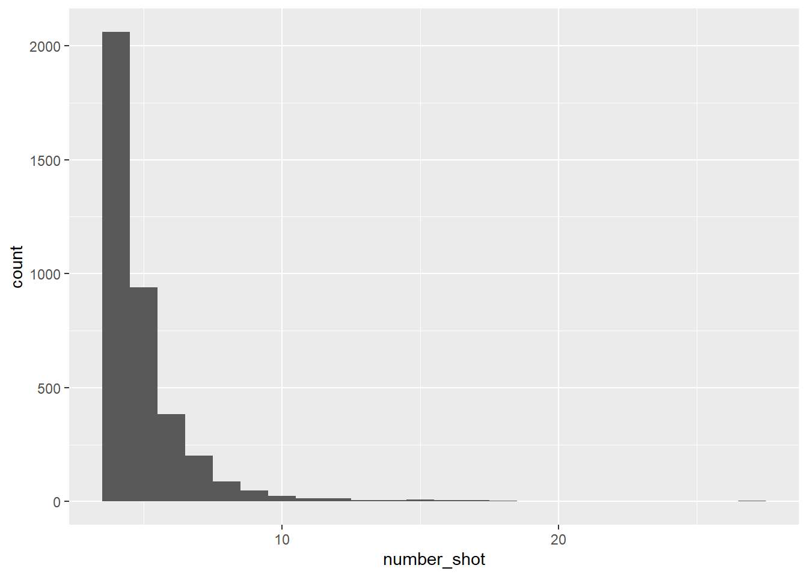
#creating a new variable, severity, by categorizing the number shot into low, mid, high
mass_shootings_all<-mass_shootings_all %>%
mutate(severity= case_when(number_shot <= 9 ~ "low", number_shot >= 10 & number_shot <= 29 ~ "mid",
number_shot >= 30 ~ "high"))
mass_shootings_all# A tibble: 3,835 × 11
incide…¹ incident…² state city_…³ address numbe…⁴ numbe…⁵ Year month numbe…⁶
<dbl> <date> <chr> <chr> <chr> <dbl> <dbl> <chr> <fct> <dbl>
1 271363 2014-12-29 Loui… New Or… Poydra… 0 4 2014 Dec 4
2 269679 2014-12-27 Cali… Los An… 8800 b… 1 3 2014 Dec 4
3 270036 2014-12-27 Cali… Sacram… 4000 b… 0 4 2014 Dec 4
4 269167 2014-12-26 Illi… East S… 2500 b… 1 3 2014 Dec 4
5 268598 2014-12-24 Miss… Saint … 18th a… 1 3 2014 Dec 4
6 267792 2014-12-23 Kent… Winche… 260 Ox… 1 3 2014 Dec 4
7 268282 2014-12-22 Mich… Detroit Charle… 1 3 2014 Dec 4
8 282186 2014-12-22 New … Webster 191 La… 4 2 2014 Dec 6
9 267721 2014-12-22 Illi… Chicago 5700 b… 0 5 2014 Dec 5
10 266570 2014-12-21 Flor… Saraso… 4034 N… 2 2 2014 Dec 4
# … with 3,825 more rows, 1 more variable: severity <chr>, and abbreviated
# variable names ¹incident_id, ²incident_date, ³city_or_county,
# ⁴number_killed, ⁵number_injured, ⁶number_shot
# ℹ Use `print(n = ...)` to see more rows, and `colnames()` to see all variable names#2D histogram, depicting incidents by year based on number killed, and a count for how many incidents in a particular year
mass_shootings_all %>%
filter(number_shot<100) %>%
ggplot(aes(Year, number_shot))+geom_bin2d()+labs(title="Mass Shootings by Number of People Killed or Injured (2014-2022)*", caption="*Shootings with over 100 killed/injured are exluded for readability")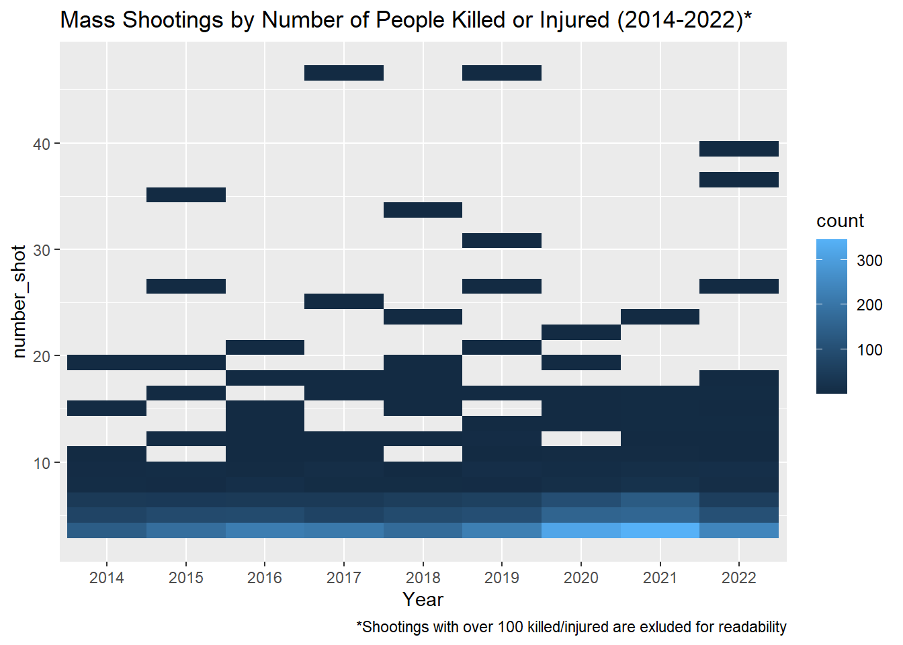
#boxplot with number_shot by year
mass_shootings_all %>%
filter(number_shot<100) %>%
ggplot(aes(Year, number_shot))+geom_boxplot()+labs(title="Mass Shootings by Number of People Killed or Injured (2014-2022)", caption="*Shootings with over 100 killed/injured are exluded for readability")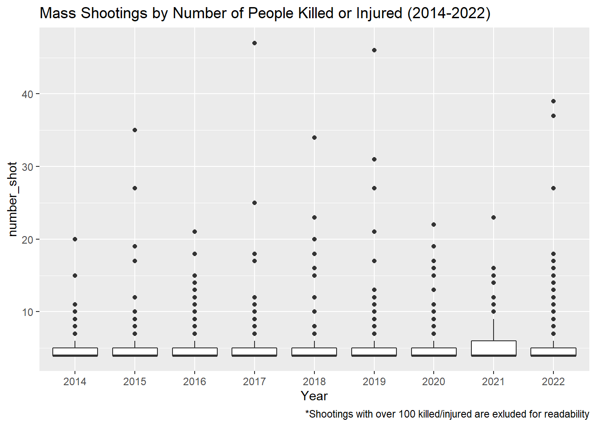
#violin plot with number_shot by year
mass_shootings_all %>%
filter(number_shot<100) %>%
ggplot(aes(Year, number_shot))+geom_violin()+labs(title="Mass Shootings by Number of People Killed or Injured (2014-2022)", caption="*Shootings with over 100 killed/injured are exluded for readability")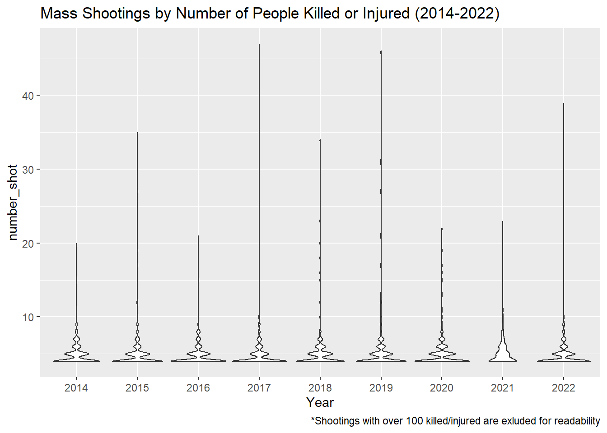
#scatterplot
filter(mass_shootings_all, number_shot<100) %>%
ggplot(aes(x=incident_date, y=number_shot))+geom_point()+labs(title="Shootings 2014-2022", caption="*Shootings with over 100 killed/injured are exluded for readability")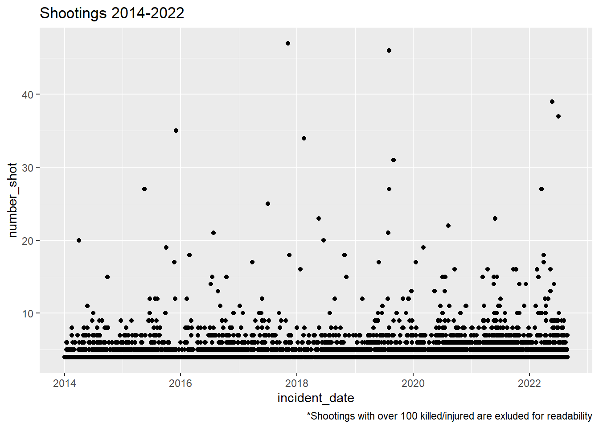
#stacked bar chart with severity by year
ggplot(mass_shootings_all, aes(Year, fill=severity))+geom_bar(stat="count")+labs(title="Severity of Shootings by Year")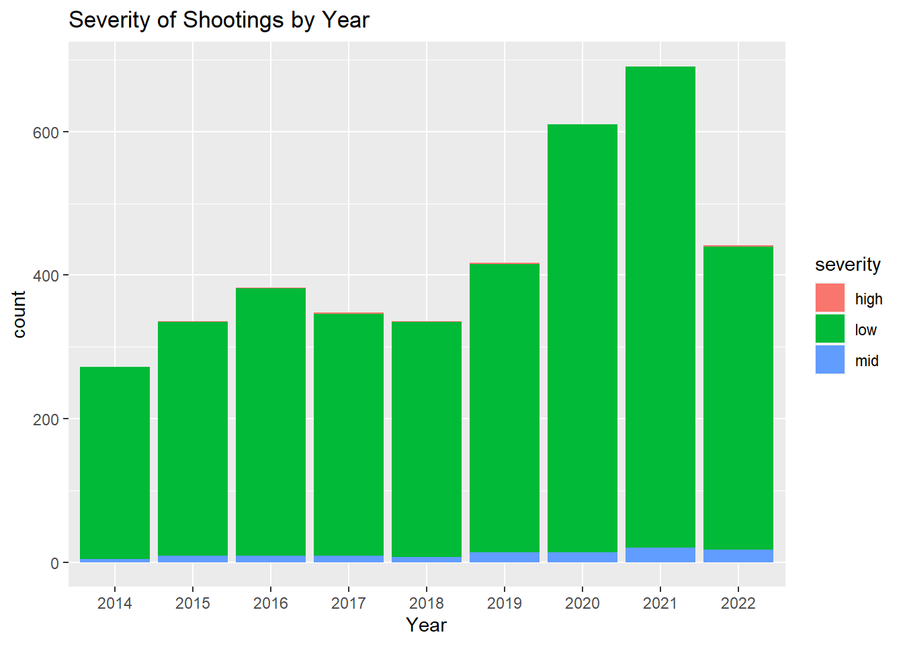
#high severity shootings by year
filter(mass_shootings_all, severity=="high") %>%
ggplot(aes(Year))+geom_histogram(stat="count")+labs(title="High Severity Shootings by Year")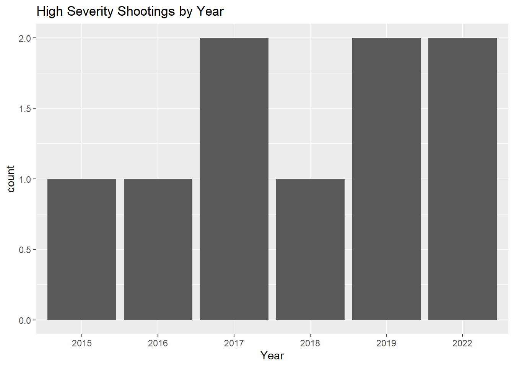
#mid severity shootings by year
filter(mass_shootings_all, severity=="mid") %>%
ggplot(aes(Year))+geom_histogram(stat="count")+labs(title="Mid Severity Shootings by Year")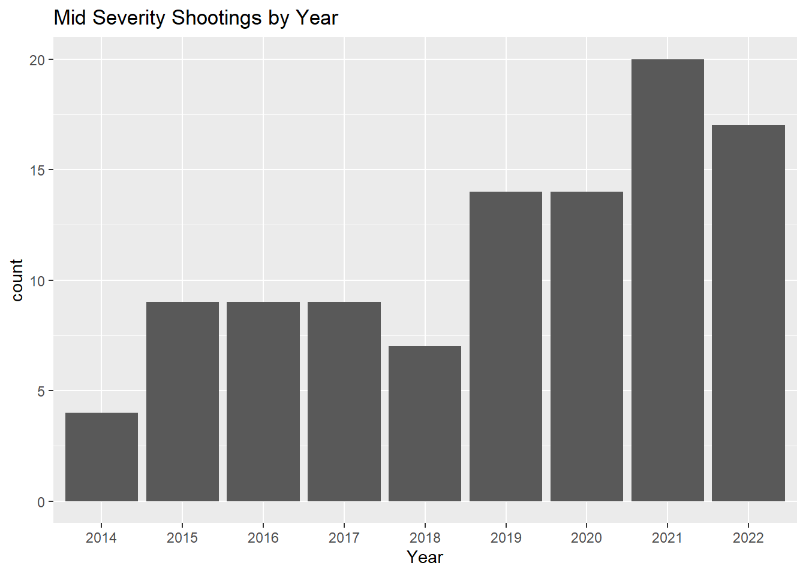
#mid severity shootings by month
filter(mass_shootings_all, severity=="mid") %>%
ggplot(aes(month))+geom_histogram(stat="count")+labs(title="Mid Severity Shootings by Month")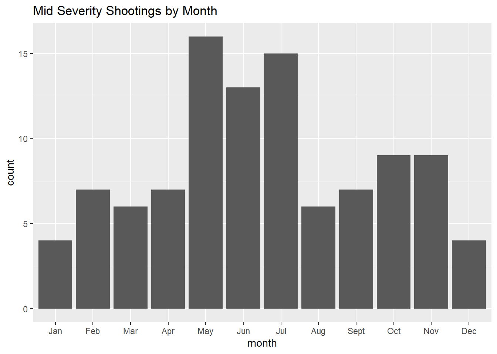
#mid severity shootings by month line plot
filter(mass_shootings_all, severity=="mid") %>%
ggplot(aes(month))+geom_line(stat="count", group=1)+geom_point(stat="count")+labs(title="Mid Severity Shootings by Month")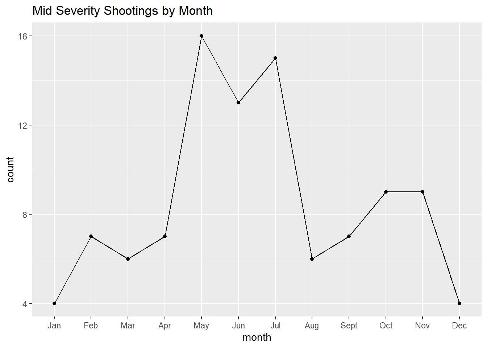
#high severity shootings by month
filter(mass_shootings_all, severity=="high") %>%
ggplot(aes(month))+geom_histogram(stat="count")+labs(title="High Severity Shootings by Month")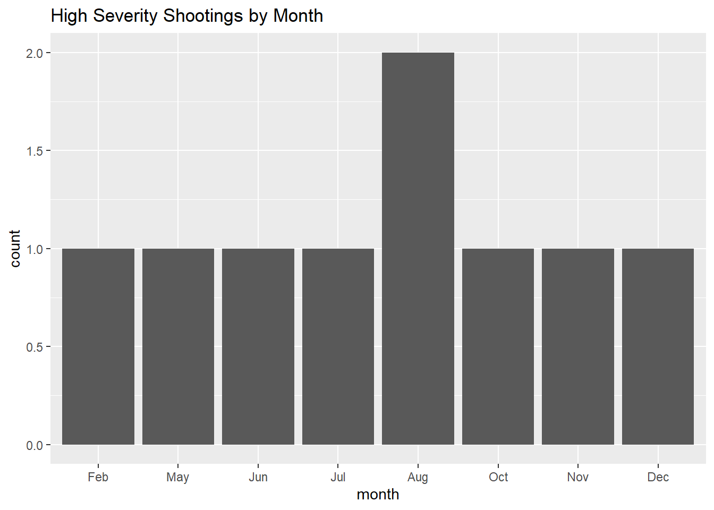
#Scatterplot of the mid/highest severity shootings
filter(mass_shootings_all, severity=="mid" | severity=="high") %>%
ggplot(aes(x=incident_date, y=number_shot))+geom_point()+labs(title="Mid Severity Shootings 2014-2022")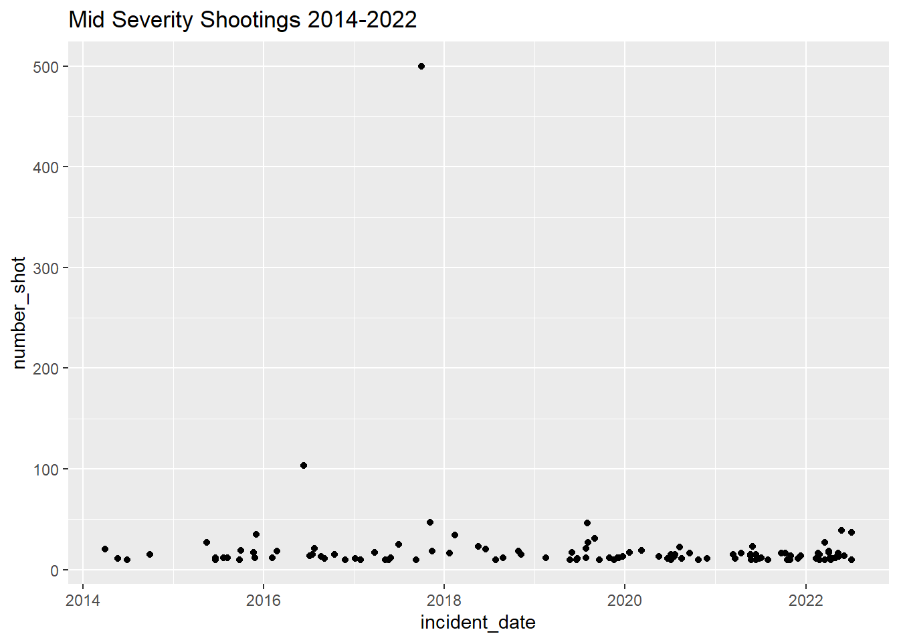
From these graphs, it looks like mass shootings are increasing in number over time, and “mid” severity shootings are also increasing slightly